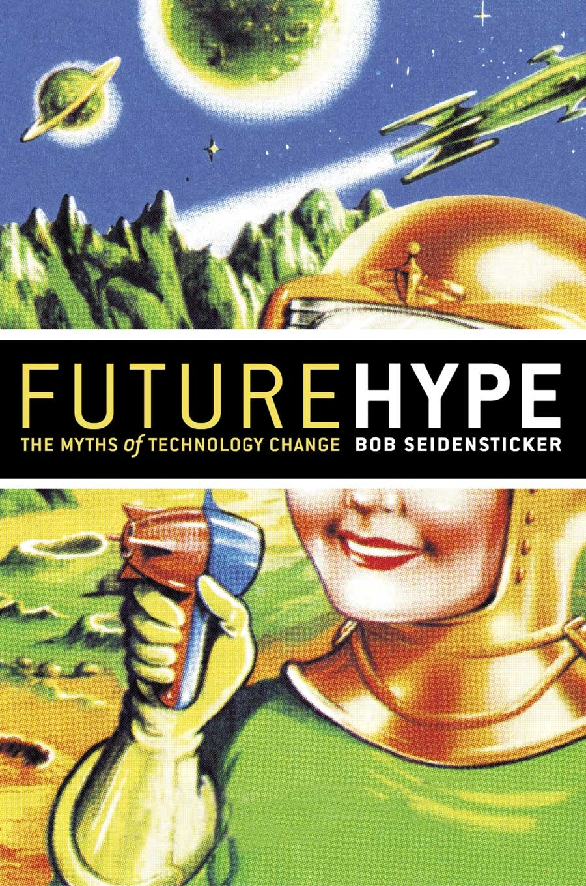

Are you one of those people who suspects that all the hoopla we hear about technological advances is mainly hype? I don’t mean just marketing hyperbole, but fundamentally misleading and shameless exaggeration.
It turns out that hyping technology - that is, overstating its significance and overrating its usefulness - may be deeply imbedded in our western psyche, and here’s a book that may convince you: Bob Seidensticker’s Future Hype: The Myths of Technology Change. It was, for me, one of the best and most enjoyable critiques I’ve seen of modern society’s drive for technological change.
Some may not be prepared to believe that the hype is as misplaced as Seidensticker shows it to be, but you will be pleasantly surprised how entertaining the discussion about it can be. His style allows us to laugh at ourselves; how else do you explain that a book deeply critical of computer hype is being promoted by Seidensticker’s former employer, Microsoft?
Future Hype has been available for a while, but be forewarned that exaggeration of the merits of technology continues unabated: Green algae was recently promoted as 100 times more powerful than the best energy crop. How did they get that figure? The hypers turned an acre slice of soil on its side sticking up in the air like a skyscraper (you can grow algae in tall narrow tanks), and they measured the yield in terms of the tiny footprint on the ground! It turns out, algae is twice as productive as some of our best crops, it just happens to cost 5,000 times more per acre to implement. Keep a close eye on those facts, folks!
You can find the book and more at Future Hype online.
|
 CSA IMAGES Dig deep to get the real story on new technology. |
|
|